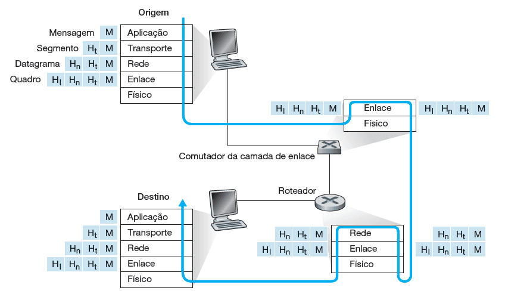

Encapsulamento
Conceito de encapsulamento
Confira a seguir os principais pontos sobre o encapsulamento.
Para compreender o conceito de encapsulamento, considere uma mensagem da camada de aplicação na máquina emissora que é passada para a camada de transporte. Essa camada pega a mensagem e anexa as informações de cabeçalho de camada de transporte. Essas informações serão usadas pela camada de transporte do lado receptor.
Comentário
A mensagem da camada de aplicação e as informações de cabeçalho da camada de transporte, juntas, formam o que é chamado de Unidade de Dados de Protocolo, ou PDU (Protocol Data Unit), que, nesse caso, é chamado de segmento da camada de transporte, que encapsula a mensagem da camada de aplicação.
A camada de transporte então passa o segmento à camada de rede, que adiciona informações de cabeçalho de camada de rede, como endereços de sistemas finais de origem e de destino, criando um datagrama de camada de rede. Este é então passado para a camada de enlace, que adicionará suas próprias informações de cabeçalho e criará um quadro de camada de enlace. Finalmente, os dados são passados para a camada física, que transmite os dados na forma de bits pelo meio físico.
Em cada camada, um PDU possui campos de cabeçalho e um campo de carga útil. A carga útil é, em geral, um pacote da camada acima. Quando o pacote chega no sistema final destino, o processo de desencapsulamento se inicia. Na extremidade receptora, cada segmento deve ser reconstruído a partir dos datagramas que o compõem. O conceito de encapsulamento está ilustrado na imagem que veremos a seguir.
Caminho dos dados
Quando um sistema final envia pacotes para outro sistema final, o caminho físico que os dados percorrem é o seguinte:
- Sentido para baixo na pilha de protocolos de um sistema final emissor.
- Sentido para cima e para baixo nas pilhas de protocolos de um comutador e roteador de camada de enlace que estejam no caminho.
- Depois para cima na pilha de protocolos do sistema final receptor.
Os roteadores e comutadores de camada de enlace não implementam todas as camadas da pilha de protocolos. Por exemplo, os roteadores da internet são capazes de executar o protocolo IP (da camada 3), mas comutadores de camada de enlace não (só até a camada 2, de enlace). Os hospedeiros implementam todas as cinco camadas.

Conceito de encapsulamento
O que você achou do conteúdo?